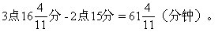

习题八解答
1.解：在6点整时，分针落后时针5×6＝30（个）格，到分针与时针
2.解：在2点整时，分针落后时针5×2＝10（个）格，到分针与时针重合时，分针要比时针多走10个格，所以到达这一时刻所用的时间为：10
时刻.现在看3点整时，分针落后时针5×3＝15（个）格，到分针与时针重合针时，分针要比时针多走15个格，这样到达这一时刻所用的时间为：
的时间为：

3.解：在2点整时，分针落后时针5×2=10（个）格，当分针与时针第一次成直角时，分针超过时针60×（90÷360）=15（个）格，因此在这段时间内分针要比时针多走10+15=25（个）格，所以到达这一时刻所用的时间为：
4.解：①当分针落后时针而与时针成120°角时：
当分针落后时针而与时针成120°角时，分针落后时针60×（120÷360）＝20（个）格，而7点整时分针落后时针5×7=35（个）格，因此在这段时间内分针要比时针多走35—20=15（个）格，所以到达这一时刻所
之间的夹角为120°。
②当分针超过时针而与时针成120°角时：
当分针超过时针而与时针成120°角时，分针超过时针20格，而7点整时分针落后时针35格，因此在这段时间内分针要比时针多走35＋20=55（个）
在7点60分即8点整时，两针之间的夹角为120°。
5.解：①当分针与时针的夹角为180°角时：
当分针与时针的夹角为180°角时，分针落后时针60×（180÷360）=30（个）格，而10点整时分针落后时针5×10=50（个）格，因此在这段时间内分针要比时针多走50-30＝20（个）格，所以到达这一时刻所用的时
一条直线上。
②当分针与时针的夹角为0°即分针与时针重合时：
10点整时分针落后时针50个格，因此当分针与时针重合时分针要比时
格/标准分。
根据旧钟的时针与分针每重合一次耗用66标准分钟，列方程得：60÷
×60×24格。
则这只旧钟标准时间一天慢：

7.解法1：依题意，钟停的时间与上班路上用的时间之和为：14点50分-12点10分=160（分钟）.钟停的时间与下班路上用的时间之差为：11点-9点=120（分钟）；因此钟停的时间是：（160+120）÷2=140（分钟）。
答：李叔叔家的钟停了140分钟。
解法2：李叔叔在12点10分上足发条，到回家时的9点钟，共8小时50分.这8小时50分钟扣除早到的10分钟及工作的8小时，余40分钟，这是来回路上用的时间.因此路上单程要花40÷2=20（分钟）.李叔叔到厂的时间是2点50分，扣除路上的20分钟，离家的时间是2点30分，而他家的钟面上却是12点10分，中间相差2小时20分.这2小时20分即140分钟就是他家钟停了的时间。
答：李叔叔家的钟停了140分钟.